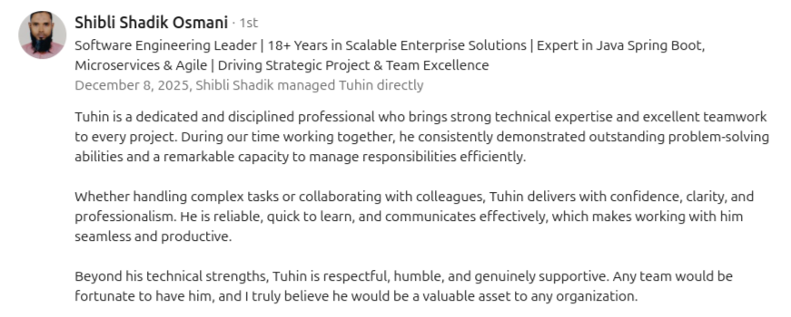
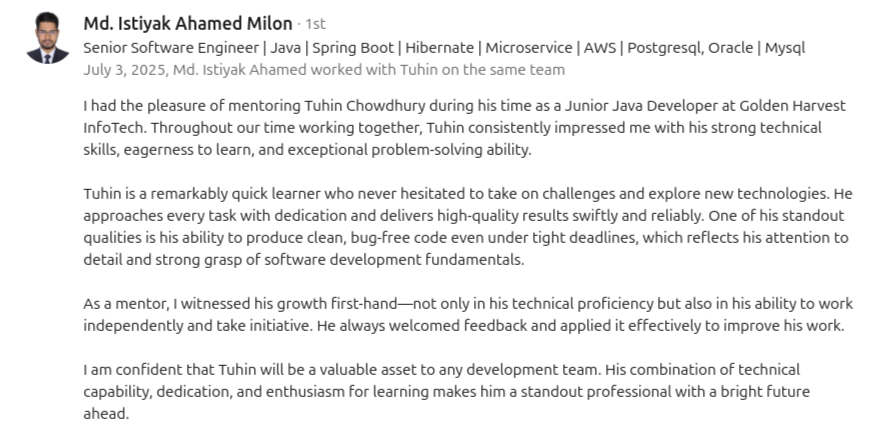
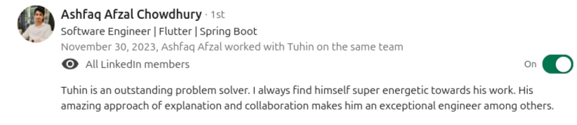

Tuhin Chowdhury
Software Engineer | AI/ML Enthusiast
Email : tuhin.sec@gmail.com

I'm a Software Engineer with over 3.5 years of experience in the industry. My motivation for coding and software engineering comes from solving day-to-day life problems and tackling industry-level challenges. I primarily work with backend services, system design and architecture, especially using Java and the Spring Boot framework. Over the years, I've gained experience across multiple project stacks, including desktop applications using .NET, mobile app development, and currently AI agents, MCP tools, and automation (n8n).
I am currently working as a backend software engineer at Golden Harvest Infotech Limited (CMMI Level 3, part of the 4 thousand employee Golden Harvest Group and its sister concern of: Golden Harvest), contributing to their software development team. Previously, I worked at Rokkhi IT Limited,where I helped solve real-world building management problems.
Beyond technology, I am a passionate street photographer, with participation in national and international exhibitions and multiple awards. I also enjoy painting and writing. You can view my photography on Flickr.
Education
I completed my B.Sc. in Computer Science and Engineering from Sylhet Engineering College, an affiliated engineering institute of Shahjalal University of Science and Technology.
Motivation and Strength
Research Interest
I'm exploring different areas in AI and Machine Learning because I enjoy building things, testing ideas, and improving how systems work. Some areas I'm focusing on are:
- Software systems and security
- Agentic AI and RAG-based work
- Federated learning for safer, shared systems
- Computer vision
- Machine learning in healthcare
Professional Projects
Hospital Management System (MHM, Houston, TX)

Tech Stack: SpringBoot 3, PostgreSQL, RAG, WebClient, OpenAI 4, ChromaDB, MCP, N8N, Betterstack, AWS S3, Docker
- Built Spring Boot microservices to manage patient information, bed management, admissions, and cross-department workflows across OPD, IPD, IAM, and EHR.
- Implemented secure communication using JWT, timestamp validation, IPC-based internal service calls, and Betterstack for centralized logging.
- Optimized performance with PostgreSQL through custom SQL, indexing, and optimized joins, along with asynchronous processing, scheduled jobs, and reliable transactional operations.
- Developed N8N automation workflows, OCR-based patient registration, real-time bed allocation, nurse shift tracking, and duplicate detection, significantly improving system accuracy and operational efficiency.
Church Census Records Archiving Project (Family Search, Utah)

Tech Stack: C#, .NET 8, WPF, GraphQL, SQLite, XAML, Python, Nikon SDK
- Engineered the full hardware ecosystem for a high-throughput DSLR imaging system using C#, .NET 8, and Nikon SDK, capturing 1,000+ images per hour with real-time spatial analysis and line-segment validation.
- Built a portable, offline-ready imaging solution worth 0.5 million BDT for R&D, serving a US-based company focused on family ancestry research.
- Led the backend team of the desktop application, integrating real-time image processing workflows while preserving visual aesthetics for millions of pages of historical books and documents.
- Developed a bulk image sharing pipeline maintaining image quality and producing data-entry-ready outputs, enabling faster digitization and collaboration.
- Solved challenges in real-time customized image capturing and storage management, ensuring efficient image handling and minimal post-processing.
Satellite Frequency Renting and Auto Billing System (Bangladesh Satellite Corporation, Dhaka)

Tech Stack: Java, Spring Boot, JasperSoft, Sendgrid, PostgreSQL
- Developed a Spring Boot–based automated billing system for the Bangladesh Satellite Corporation, fully automating the billing workflow.
- Eliminated 100% dependency on Excel sheets and manual reporting by automating 10+ reports with JasperReports.
- Implemented automatic client emailing and payment alert services for clients using satellite frequencies.
- Delivered end-to-end automation, significantly reducing manual work across billing, reporting, and client notifications.
Red Learn App (A product of Bangladesh Red Crescent Society)

Tech Stack: Kotlin, Firestore, Jetpack Compose, Dependency Injection
- Worked on native Android development using Kotlin, Jetpack Compose, and dependency injection for the Redlearn app, designing an online training and exam system.
- Integrated certificate generation, progress tracking, and analytics using a relational database system, reducing offline training costs by over 40%.
- Enabled 1,000+ trainings through the app, optimized for smooth performance, scalability, and offline usability across devices.
Reviews & Recommendations
Review 1

Click to view full size
Review 2

Click to view full size
Review 3

Click to view full size
Publications
Book Chapter
BLDAR: A Blending Ensemble Learning Approach for Primary Energy Consumption Analysis
Book: Machine Learning Technologies on Energy Economics and Finance
Publisher: Springer
Implemented BLDAR, a novel blended ensemble model achieving a state-of-the-art 90% R² score.

Conference Paper
An Automatic System for Identifying and Categorizing Tribal Clothing Based on Convolutional Neural Networks
Conference: International Conference on Emerging Research in Electronics, Computer Science and Technology (ICERECT)
Publisher: IEEE
Developed a CNN-based system achieving 89.97% accuracy with YOLOv5.